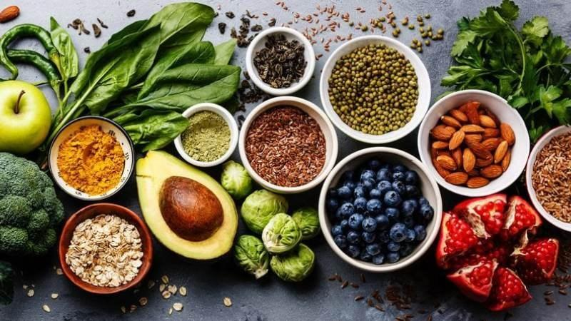

Sau Phun Môi Kiêng Ăn Gì? Hướng Dẫn Chăm Sóc Để Môi Lên Màu Đẹp
Sau khi phun môi, bên cạnh tay nghề của kỹ thuật viên thì chế độ chăm sóc và ăn uống cũng ảnh hưởng rất lớn đến quá trình hồi phục và lên màu. Nhiều khách hàng lo lắng không biết nên kiêng những món gì, kiêng trong bao lâu và ăn gì để môi nhanh đẹp.
Thực tế, không phải tất cả thực phẩm đều cần kiêng. Điều quan trọng là lựa chọn thực phẩm phù hợp trong giai đoạn đầu để hạn chế kích ứng và hỗ trợ môi phục hồi tốt hơn.
Vì Sao Cần Kiêng Ăn Sau Khi Phun Môi?
Sau phun môi, vùng môi cần thời gian để hồi phục. Một số loại thực phẩm có thể làm môi lâu lành, dễ gây kích ứng hoặc ảnh hưởng đến quá trình lên màu.
Ngược lại, chế độ ăn hợp lý sẽ giúp môi bong tự nhiên, giảm cảm giác khó chịu và hỗ trợ màu ổn định hơn sau khi hồi phục.
Những Thực Phẩm Nên Kiêng Sau Phun Môi

Sau Phun Môi Nên Ăn Gì?
Rau xanh
Bạn có thể bổ sung rau cải, rau bina, bông cải xanh để cung cấp vitamin và chất xơ, hỗ trợ cơ thể hồi phục tốt hơn.
Trái cây
Nên chọn cam, bưởi, kiwi, dâu tây hoặc các loại trái cây giàu vitamin. Nếu môi còn nhạy cảm, bạn có thể uống bằng ống hút theo hướng dẫn để hạn chế tiếp xúc trực tiếp.
Uống đủ nước
Nước giúp cơ thể duy trì trạng thái cân bằng và hỗ trợ quá trình hồi phục. Trong những ngày đầu, nếu được hướng dẫn, bạn có thể dùng ống hút để hạn chế môi tiếp xúc với cốc.
Thực phẩm giàu protein
Có thể lựa chọn cá, trứng, đậu phụ tùy tình trạng thực tế và hướng dẫn sau phun.
Cần Kiêng Trong Bao Lâu?
Thời gian kiêng không giống nhau ở tất cả mọi người. Thông thường, giai đoạn đầu cần chú ý hơn. Khi môi đã bong và hồi phục ổn định, bạn có thể dần quay lại chế độ ăn bình thường theo hướng dẫn của kỹ thuật viên.
Nếu có cơ địa đặc biệt hoặc tiền sử dị ứng, hãy trao đổi trực tiếp với cơ sở thực hiện để được hướng dẫn sát với tình trạng môi của bạn.
Những Sai Lầm Thường Gặp
Bóc lớp bong
Đây là sai lầm phổ biến nhất. Việc tự bóc có thể làm màu lên không đều và khiến môi lâu hồi phục hơn.
Liếm môi liên tục
Liếm môi nhiều khiến môi dễ khô hơn, đặc biệt trong giai đoạn đang bong.
Không dưỡng môi
Dưỡng môi đúng cách theo hướng dẫn giúp môi mềm và hỗ trợ quá trình hồi phục.
Checklist Chăm Sóc Sau Phun
Uống đủ nước.
Ăn nhiều rau xanh và trái cây phù hợp.
Không tự bóc lớp bong.
Hạn chế rượu bia và thuốc lá.
Làm đúng hướng dẫn của kỹ thuật viên.
Câu Hỏi Thường Gặp
Sau phun môi bao lâu được ăn bình thường?
Điều này phụ thuộc vào tốc độ hồi phục của từng người và hướng dẫn của cơ sở thực hiện.
Có cần kiêng tuyệt đối tất cả các món trên không?
Không phải ai cũng cần kiêng giống nhau. Hãy làm theo hướng dẫn của kỹ thuật viên và cân nhắc cơ địa của bản thân.
Có nên uống nước cam?
Nước cam có vitamin C, nhưng nếu môi còn nhạy cảm, nên uống bằng ống hút để hạn chế tiếp xúc trực tiếp.
Sau phun môi có được ăn rau xanh không?
Có. Rau xanh là nhóm thực phẩm nên bổ sung vì giúp cơ thể có thêm vitamin và chất xơ.
Kết Luận
Chăm sóc đúng cách sau khi phun môi đóng vai trò quan trọng trong quá trình hồi phục và lên màu. Bên cạnh việc lựa chọn thực phẩm phù hợp, bạn cũng nên giữ môi sạch, không tự bóc lớp bong và tuân thủ hướng dẫn của kỹ thuật viên.